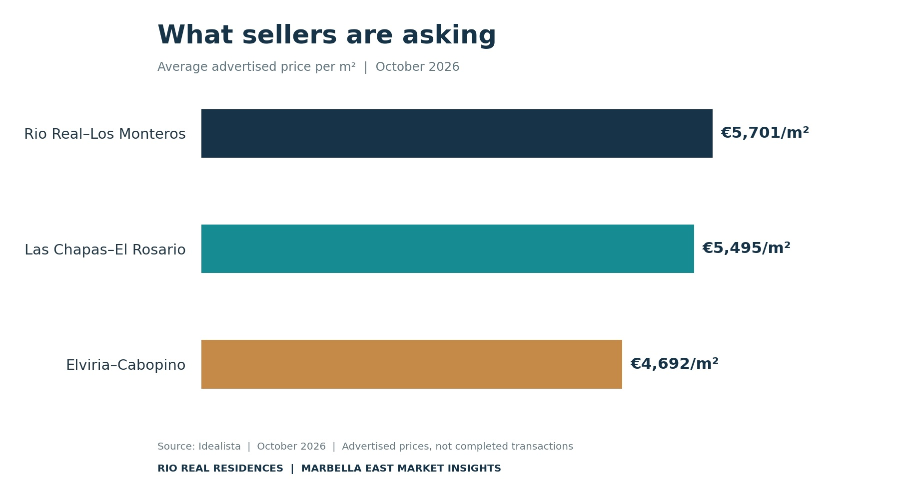
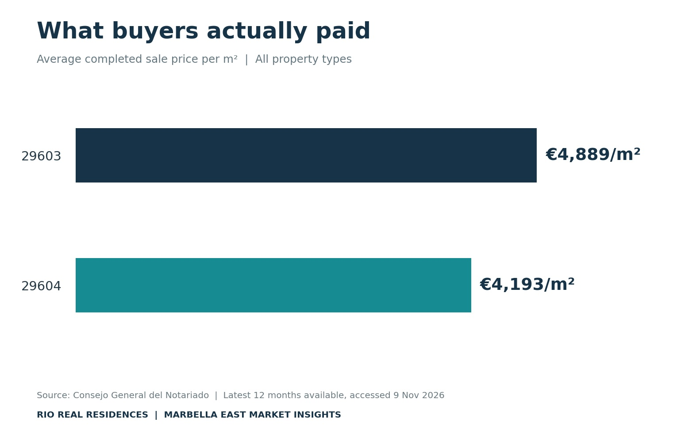
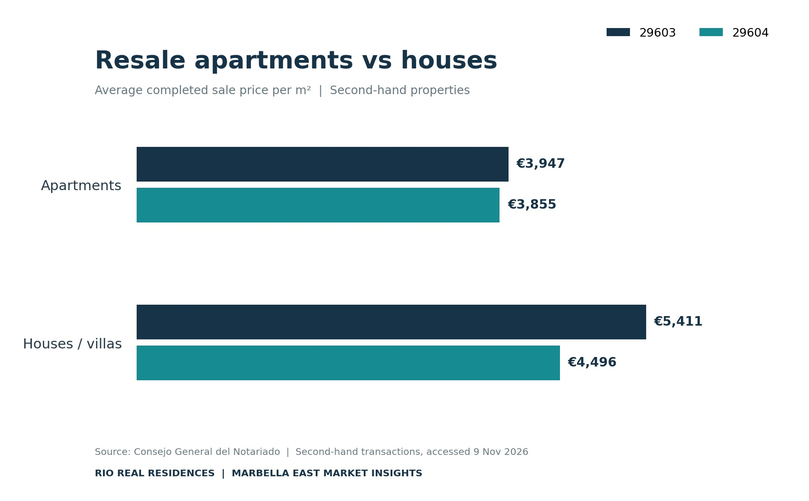

TL;DR
Marbella East Property Market, November 2026
- Marbella asking prices: 5,974 €/m² (Idealista) and 5,060 €/m² (Fotocasa) in October 2026.
- Rio Real–Los Monteros: 5,701 €/m² on Idealista and 5,323 €/m² on Fotocasa, reflecting differences between the two platforms.
- Actual sales: A report published in October 2026 cites an average of 4,789 €/m² for completed transactions across Marbella, based on a rolling 12-month notarial dataset.
- Different neighbourhoods, different markets: In September, Idealista recorded 5,000 €/m² in Rio Real compared with 8,667 €/m² in Los Monteros.
- The important distinction: Asking prices, professional valuations and completed sales measure different aspects of the property market. None should be used in isolation to establish what an individual home is worth.
Marbella property prices are rising. But which prices?
Marbella's average asking price reached 5,974 € per square metre in October 2026, according to Idealista, a new high for the municipality and an increase of 3.1% compared with the previous year.
Fotocasa recorded a lower average of 5,060 €/m² for the same month, although its index also showed annual growth, at 4.8%.
Both platforms point towards higher advertised prices across Marbella, but the difference between their figures is substantial.
And neither tells us what buyers are actually paying.
For that, we need to look at completed property transactions, recorded in the deeds signed before a notary.
With Spain's Consejo General del Notariado now publishing more detailed transaction statistics, buyers and sellers have access to a clearer picture of the market than was previously available.
This is particularly relevant in Marbella East, where property prices can vary considerably between neighbouring residential communities.
How much does property cost in Marbella East in 2026?
Marbella East is not one uniform property market.
The area encompasses established golf communities, beachfront apartments, detached villas and contemporary residential developments. Properties in Rio Real, Los Monteros, El Rosario and Elviria may share the same stretch of coastline, but their prices reflect very different locations and housing stock.
The October 2026 indices from Idealista and Fotocasa provide a useful comparison.

Source: Idealista and Fotocasa asking-price indices, October 2026.
| Area | Idealista €/m² | Fotocasa €/m² |
|---|---|---|
| Marbella municipality | 5,974 € | 5,060 € |
| Rio Real-Los Monteros | 5,701 € | 5,323 € |
| Las Chapas-El Rosario | 5,495 € | 5,175 € |
| Elviria-Cabopino | 4,692 € | 4,647 € |
Source: Idealista and Fotocasa asking-price indices, October 2026.
The differences between the two portals are worth noting. In Rio Real and Los Monteros, for example, Idealista's figure is 378 €/m² higher than Fotocasa's.
That doesn't mean either index is necessarily incorrect. Each draws on its own property advertisements and applies its own methodology. They also measure asking prices rather than final sale prices.
For buyers, these figures provide a useful indication of advertised market levels. For sellers, they help establish how competing properties are being positioned. But they are only the starting point.
Rio Real, Los Monteros and the importance of looking beyond district averages
The difference becomes even more apparent when we examine smaller neighbourhoods. Idealista's September 2026 figures reveal significant variations within its broader Rio Real-Los Monteros district.
| Neighbourhood | Asking price per m² |
|---|---|
| Los Monteros | 8,667 € |
| Bahía de Marbella | 7,629 € |
| Rio Real | 5,000 € |
| Alto de los Monteros | 4,373 € |
Source: Idealista, September 2026. Neighbourhood averages, not valuations of individual properties.
Los Monteros recorded an average asking price approximately 73% higher than Rio Real. That is a striking difference between neighbouring locations, although it needs careful interpretation.
Los Monteros is associated with some of Marbella's most prestigious beachside residential properties, where proximity to the Mediterranean and the character of established luxury developments can command significant premiums.
Rio Real has a broader mix of residential properties, including villas, townhouses and apartments around Rio Real Golf, in elevated communities and closer to the coastline. Some homes enjoy extensive sea or golf views, while others offer larger plots or opportunities for renovation.
The figures do not establish that Rio Real is automatically better value, nor that every property in Los Monteros commands a premium. They do suggest that buyers with similar budgets may encounter very different options in each neighbourhood.
Asking prices versus actual sale prices: What do the notaries tell us?
Until recently, one of the challenges in analysing Spain's property market was the limited availability of detailed information about completed sales. Property portals published extensive advertised-price data, but the prices ultimately agreed between buyers and sellers were considerably harder to establish.
The Portal Estadístico del Notariado, developed by Spain's Consejo General del Notariado, has helped address that gap. Unlike Idealista and Fotocasa, which track advertised asking prices, the Notariado publishes information drawn from completed property transactions, including prices declared in signed deeds.
Its database provides statistics at municipal and postcode level, including average sale prices per square metre, transaction volumes and property characteristics.
For this report, Rio Real Residences examined the latest available notarial data for two Marbella East postcodes: 29603 and 29604, covering residential areas including Rio Real, Los Monteros, Las Chapas and Elviria.
What do completed property sales tell us about Marbella East?

Source: Consejo General del Notariado, Portal Estadístico del Notariado. Latest 12 months available, accessed 9 November 2026.
The latest available Notariado figures reveal differences between the two postcodes.
| Property market indicator | 29603 | 29604 |
|---|---|---|
| Average completed sale price/m² | 4,889 € | 4,193 € |
| Completed transactions | 401 | 541 |
| Average transaction value | 707,310 € | 679,905 € |
| Average property size | 145 m² | 162 m² |
Source: Consejo General del Notariado, Portal Estadístico del Notariado. All property and construction types. Latest 12 months available, accessed 9 November 2026.
The average completed sale price per square metre in postcode 29603 was approximately 16.6% higher than in 29604. However, the average transaction values were much closer, reflecting differences in the size and mix of properties sold. In 29603, the average property sold measured 145m², compared with 162m² in 29604.
These figures provide a useful geographical comparison, but postcode averages encompass a wide range of properties.
Resale apartments and villas: A closer comparison
By filtering the Notariado data to include only second-hand properties, we can examine the resale apartment and house markets separately.

Source: Consejo General del Notariado. Second-hand residential transactions, latest 12 months available. Figures retrieved 9 November 2026.
| Resale property type | 29603 €/m² | 29604 €/m² |
|---|---|---|
| Apartments | 3,947 € | 3,855 € |
| Houses / villas | 5,411 € | 4,496 € |
Source: Consejo General del Notariado. Second-hand residential transactions, latest 12 months available, November 2026.
The difference between the two postcodes is relatively small for resale apartments: 3,947 €/m² in 29603 and 3,855 €/m² in 29604, a difference of approximately 2.4%.
For houses and villas, however, the difference is considerably more pronounced. The average completed sale price reached 5,411 €/m² in 29603, compared with 4,496 €/m² in 29604, a difference of approximately 20%.
This suggests that the two postcodes have more closely aligned resale apartment markets than house markets, at least within the transactions recorded during the reporting period. The figures do not explain the entire difference; property size, location, condition, plot characteristics and the mix of homes sold can all influence the averages.
Why asking prices and completed sale prices cannot be directly compared
Although the Notariado provides valuable evidence of completed transactions, it would be misleading to calculate an average negotiation discount by simply subtracting its figures from those published by Idealista or Fotocasa.
The datasets cover different properties, reporting periods and geographical classifications. Property portals reflect the homes currently advertised, while the Notariado records properties that have completed the sales process. Both are useful measures of the market, but they should be interpreted separately.
A third perspective: Professional property valuations
There is another important source of property market information: professional valuations. Tinsa, one of Spain's major property valuation companies, publishes its IMIE Mercados Locales index using information from property appraisals.
Unlike Idealista and Fotocasa, this is not an asking-price index. And unlike the Notariado, it is not a record of completed sale prices. Professional valuations assess property values using established methodologies and market evidence, including comparable transactions and individual property characteristics.
Tinsa's third-quarter 2026 data for Marbella indicates strong annual growth in appraised residential values, reinforcing the importance of distinguishing between different measurements of market performance.
Valuation figures are particularly relevant when mortgage financing is involved, as lenders generally require an independent appraisal. However, an appraisal is not a guarantee of the price a property will achieve on the open market.
Are Marbella East property prices still increasing?
The latest asking-price data suggests a market moving at different speeds.
| District | Annual change, October 2026 |
|---|---|
| Las Chapas-El Rosario | +7.9% |
| Elviria-Cabopino | +3.5% |
| Rio Real-Los Monteros | −1.7% |
Source: Idealista, October 2026. Fotocasa recorded positive annual growth in all three districts, including +3.9% in Rio Real-Los Monteros.
That apparent disagreement illustrates the limitations of relying on a single property portal. Different listing inventories and methodologies can produce different results, particularly in areas with a varied mix of luxury homes.
A fall in an advertised-price index does not necessarily mean that individual properties have lost value. Equally, a rising district average does not mean that every property is worth more than it was a year ago. For buyers and sellers, the characteristics of the individual property remain central to any meaningful comparison.
What does the INE tell us about property sales?
Spain's Instituto Nacional de Estadística (INE) provides another important measure of housing market activity. Its property transfer statistics track transactions entered into the Property Registers, including purchases of new and existing homes.
According to the INE's August 2026 release, published on 26 October, registered residential property sales across Spain increased by 3.4% compared with August 2025. Of those transactions, 78.7% involved existing homes and 21.3% new properties.
These national figures provide context for housing market activity, but they should not be interpreted as evidence of the same growth rate in Marbella East. The INE's property transfer statistics measure the number of registered transactions, rather than the average prices achieved in individual Marbella neighbourhoods. For local pricing analysis, the notarial transaction data is therefore more directly relevant.
Apartments, townhouses and villas: Why property type matters
The price per square metre is useful, but comparing different types of property can be misleading. An apartment overlooking the beach in Los Monteros, a townhouse near Rio Real Golf and a detached villa in Elviria are not directly comparable simply because they share a similar built area.
Apartments and penthouses in Marbella East
For apartments, location within the development, sea views, orientation, terrace space and the quality of communal facilities can significantly influence the price. The Notariado figures show that resale apartments in postcodes 29603 and 29604 achieved relatively similar average prices per square metre during the reporting period. However, these averages include properties of different sizes, ages and specifications. A renovated beachfront penthouse may command a substantially higher price per square metre than an older apartment further inland.
Townhouses in Marbella East
Townhouses often appeal to buyers looking for more space than a conventional apartment, particularly where private gardens or terraces are available. The quality of the development, communal facilities, renovation requirements and proximity to amenities all affect pricing.
Detached villas in Marbella East
For villas, the built area is only one component of value. Plot size, privacy, orientation, views and the condition of the property can all have a substantial influence. The Notariado's resale house figures show a more pronounced difference between the two postcodes than those recorded for apartments. A renovated villa with a smaller plot may command a higher price per built square metre than a larger house requiring extensive work. Buyers also need to establish precisely how the advertised built area has been calculated.
What does this mean for buyers and sellers?
For buyers, the most useful conclusion is that Marbella East offers several distinct property markets within a relatively small geographical area. A budget that buys a beachfront apartment in one neighbourhood may provide access to a detached villa or a substantially larger home elsewhere.
For sellers, the challenge is establishing a realistic asking price. An average derived from advertised properties across an entire district may not accurately reflect the value of an individual home. Recent comparable transactions, property condition, location and current competing listings should all inform the assessment.
The growing availability of notarial transaction data is an important development for both sides of the market. It provides an additional reference point against which asking prices and professional valuations can be considered.
What should we expect from Marbella East in 2027?
The available figures do not support a simple prediction that Marbella East property prices will continue rising at the same rate. Marbella's municipality-wide asking prices remain above their level a year earlier, while individual eastern districts have shown different patterns. Professional valuation data also indicates substantial annual growth, although it measures a different aspect of the market.
The most useful conclusion is that location and individual property characteristics remain crucial. For anyone considering buying or selling in 2027, the sensible approach is to assess the property itself against the latest available comparable evidence rather than rely on a general forecast for Marbella.
Frequently Asked Questions
Common questions about Marbella East property prices
There is no single official Marbella East average. Idealista's October 2026 asking-price index recorded 5,701 €/m² in Rio Real–Los Monteros, 5,495 €/m² in Las Chapas–El Rosario and 4,692 €/m² in Elviria–Cabopino. These are advertised prices, not completed sale prices.
Asking prices are the amounts sellers advertise. Notarial sale prices are the transaction values declared in the deeds signed when properties are sold. Both are useful, but they measure different stages of the property market.
According to the Consejo General del Notariado's latest available 12-month data, the average completed sale price was 4,889 €/m² in postcode 29603 and 4,193 €/m² in postcode 29604, across all property types. These are postcode-wide averages rather than prices specific to individual urbanisations.
The Notariado recorded average resale apartment prices of 3,947 €/m² in postcode 29603 and 3,855 €/m² in postcode 29604, based on the latest 12 months available in November 2026.
The Notariado's resale house category recorded average prices of 5,411 €/m² in postcode 29603 and 4,496 €/m² in postcode 29604. These are averages for the properties included in the selected category, not necessarily detached luxury villas exclusively.
Idealista's September 2026 figures recorded average asking prices of 5,000 €/m² in Rio Real and 8,667 €/m² in Los Monteros. The difference reflects the mix of properties advertised in each neighbourhood and should not be interpreted as a fixed premium applying to every home.
Idealista recorded a 1.7% annual decline in asking prices for the combined Rio Real–Los Monteros district in October 2026. Fotocasa recorded an increase of 3.9% for the same broad district. These differences underline why individual property valuations should not depend on one index alone.
Notarial data provides evidence of prices declared in completed transactions, making it particularly valuable for understanding what buyers have paid. Property portals provide more immediate information about current advertised supply. Both are useful, provided their reporting periods and geographical coverage are understood.
The Portal Estadístico del Notariado publishes aggregated transaction data based on notarised property deeds. The INE and Spain's Ministry of Housing also publish official statistics on residential property transactions and market activity.
Local knowledge · Rio Real Residences
Looking to buy or sell in Marbella East?
We specialise in Rio Real, Los Monteros, Lomas de Pozuelo and Bello Horizonte, and the surrounding communities of Marbella East. We know that two homes in the same urbanisation can have very different values, depending on their position, views, condition and individual characteristics.
Whether you're buying, selling or researching the local market, we're happy to help you understand the options and assess properties on their individual merits.
Contact Louise and Charlotte at Rio Real Residences for advice on property in Rio Real and Marbella East.
Get in touchSo, is Rio Real the best place to buy property in Marbella East?
We might be a little biased. After all, we live here!
But there's a reason we've chosen to make Rio Real both our home and the focus of our business. With Marbella town centre just five minutes away, beautiful beaches on the doorstep and some exceptional residential communities overlooking the golf course and Mediterranean, we think Rio Real offers something rather special.
Of course, the right property depends on what you're looking for. And if Rio Real isn't the right fit, we'll happily tell you. After all, finding the right home matters more than finding the right postcode.